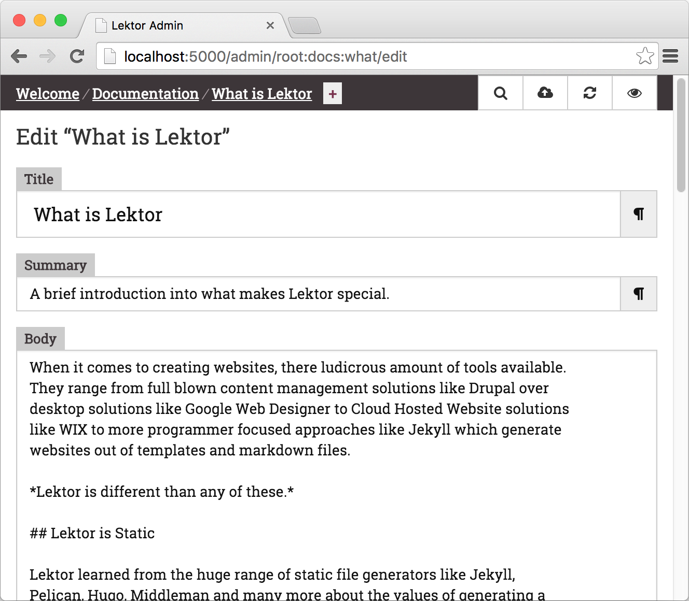
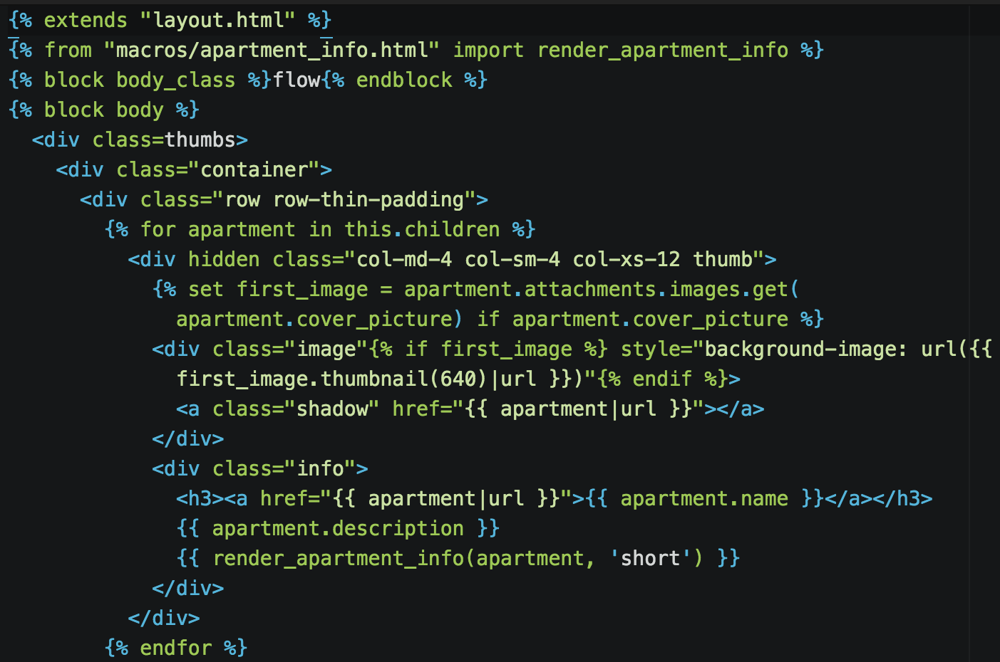

What is Lektor / 什么是 Lektor
When it comes to creating websites, there is a ludicrous number of tools available. They range from full-blown content management solutions like Drupal to desktop solutions like Google Web Designer to Cloud Hosted Website solutions like WIX to more programmer focused approaches like Jekyll which generate websites out of templates and markdown files.
在创建网站时，可用的工具数量非常多。它们的范围从像 Drupal 这样的成熟的内容管理解决方案到像 Google Web Designer 这样的桌面解决方案，像 WIX 这样的云托管网站解决方案，再到像 Jekyll 这样更注重程序员的方法，它从模板和 markdown 文件中生成网站。
Lektor is different from any of these.
Lektor 与其中任何一个都不同。
Lektor is Static / Lektor 是静态的
Lektor learned from the huge range of static file generators like Jekyll, Pelican, Hugo, Middleman and many more about the value of generating a completely static website. This means that unlike WordPress or similar solutions it does not run on a server, but your local computer (or a build server), and generates static HTML that can be uploaded to any web server or content distribution platform like S3 with CloudFront.
Lektor 从大量的静态文件生成器（如 Jekyll，Pelican，Hugo，Middleman）以及更多有关生成完全静态网站的价值的知识。这意味着与 WordPress 或类似解决方案不同，它不会在服务器上运行，而是在您的本地计算机（或构建服务器）上运行，并生成可上传到任何 Web 服务器或内容分发平台（如带有 CloudFront 的 S3）的静态 HTML。
Why go static? Because the vast, vast majority of websites will be read many more times than they will be updated. This is crucial because dynamic content does not come for free. It needs server resources and because program code is running there it needs to be kept up to date for to ensure there are no security problems that are left unpatched. Also when a website gets a sudden spike of traffic a static website will stay up for longer on the same server than a dynamic one that needs to execute code.
为什么要静态化？因为绝大多数网站将被阅读的次数比更新的次数多得多。这一点至关重要，因为动态内容不是免费提供的。它需要服务器资源，并且由于程序代码在那里运行，因此需要保持最新状态，以确保没有未修补的安全问题。此外，当网站突然获得流量高峰时，静态网站将在同一台服务器上停留更长时间，而不是需要执行代码的动态网站。
Sure, there are some things you cannot do on a static website, but those are not things you would use Lektor for. For small dynamic sections, JavaScript paired up with other services is a good solution.
当然，有些事情你不能在静态网站上做，但这些不是你使用 Lektor 做的事情。对于小型动态部分，与其他服务配对的 JavaScript 是一个很好的解决方案。

Lektor is a CMS / Lektor 是一个 CMS
Lektor takes from content management systems like WordPress and provides a flexible browser-based admin interface from which you can edit your website's contents. Unlike traditional CMS solutions, however, it runs entirely on your own computer.
Lektor 从 WordPress 等内容管理系统中获取，并提供灵活的基于浏览器的管理界面，您可以从中编辑网站的内容。但是，与传统的 CMS 解决方案不同，它完全在您自己的计算机上运行。
This means you can give a Lektor website to people that have no understanding of programming and they can still modify the content and update the website.
这意味着您可以向不了解编程的人提供 Lektor 网站，他们仍然可以修改内容并更新网站。

Lektor is a Framework / Lektor 是一个框架
Lastly, Lektor learns from experience in writing web frameworks. Lektor is much more than a website generator because it is based on a very flexible internal flat file database which can be used to model any website content. Unlike static blog generators which are based on some markdown content and “front matter” metadata Lektor's content is 100% configurable.
最后，Lektor 从编写 Web 框架的经验中学习。Lektor 不仅仅是一个网站生成器，因为它基于一个非常灵活的内部平面文件数据库，可用于对任何网站内容进行建模。与基于一些降价内容和“前沿”元数据的静态博客生成器不同，Lektor 的内容是 100% 可配置的。
If you have ever used a web framework like Django or Ruby on Rails you might feel right at home in how you can model and query your data.
如果您曾经使用过像 Django 或 Ruby on Rails 这样的 Web 框架，那么您可能会对如何建模和查询数据感到宾至如归。

Collaborate and Synchronize / 协作和同步
Lektor acknowledges that there are web developers and content editors and that their interests and preferences are very different. This is reflected heavily in the design of Lektor and if you make your first Lektor project you can see why. A web developer would go in and setup the theme and structure of a Lektor project and content creators can then fill in the content of the site.
Lektor 承认有 Web 开发人员和内容编辑，他们的兴趣和偏好非常不同。这在 Lektor 的设计中得到了很大的反映，如果你做了你的第一个 Lektor 项目，你就会明白为什么。Web 开发人员将进入并设置 Lektor 项目的主题和结构，然后内容创建者可以填写网站的内容。
The collaboration can be based on version control systems like git or just basic solutions like Dropbox. It's intentionally built so that collaboration can work via the most basic systems like Dropbox or just network shares.
协作可以基于 git 等版本控制系统，也可以基于 Dropbox 等基本解决方案。它是有意构建的，以便协作可以通过最基本的系统（如 Dropbox 或仅网络共享）进行。
When you go live, you can synchronize up your changes into a remote server just as easily.
上线后，您可以轻松地将更改同步到远程服务器中。

Comments